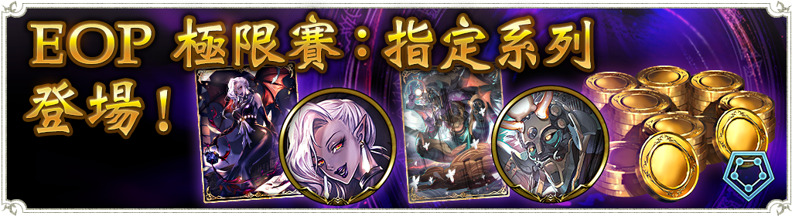
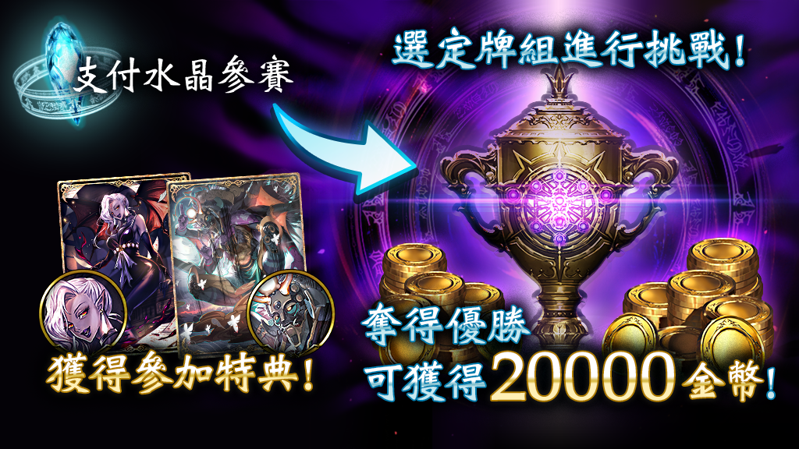
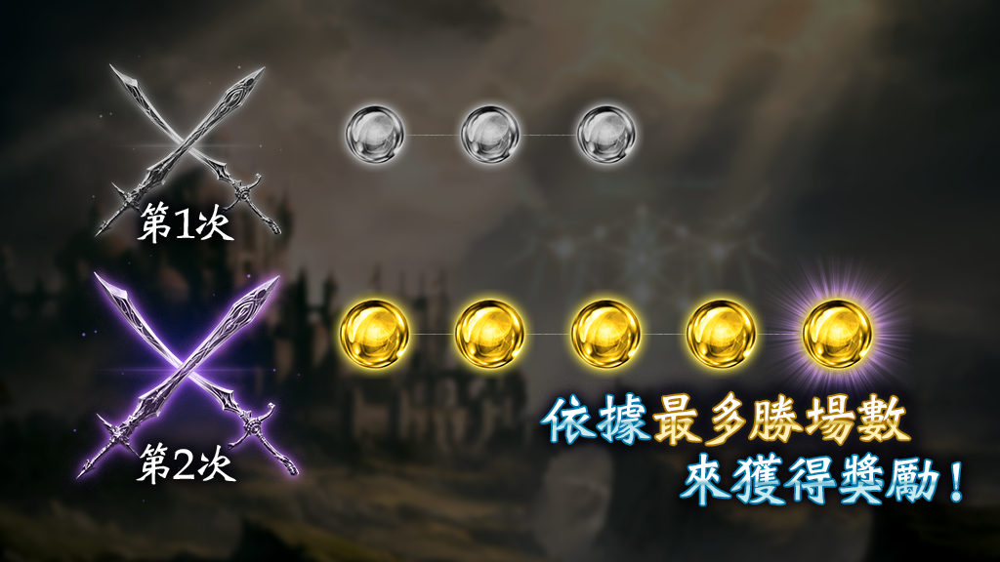
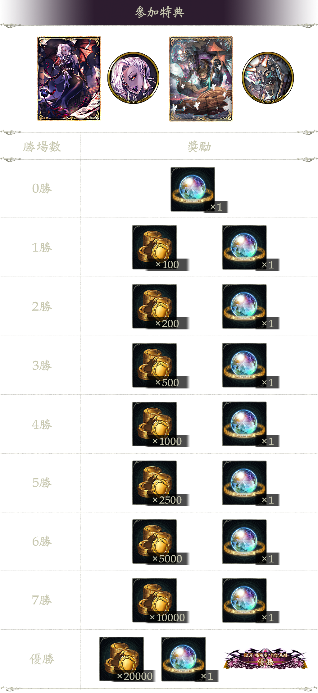

「EOP 極限賽：指定系列」登場公告

各位玩家您好
2022年5月5日 11:00(GMT+8)起將舉辦「EOP 極限賽：指定系列」，詳情如下：
■賽事概要
舉辦期間:5月5日 11:00 ~ 5月8日 03:59(GMT+8)
對戰形式：指定系列
比賽方式:BO1
可消費水晶參加賽事的上限為1次。
每次參加賽事皆能獲得2次挑戰權。
每次的挑戰權最多能進行9場對戰。
當獲得8勝(優勝)或輸掉2場對戰時,即視同結束1次挑戰。
‧參加期間
5月5日 11:00 ~ 5月7日 18:59(GMT+8)
‧對戰期間
5月5日 11:00 ~ 5月8日 03:59(GMT+8)
‧參加費
水晶 1000個

■活動概要
‧「極限賽」為限定期間內，由官方在遊戲中所舉辦的賽事活動。
‧消費水晶即可進行參賽，並能依勝場數獲得相應的獎勵。
‧作為本賽事的參加特典，也能取得徽章及卡背。
‧極限賽可從「競技場」頁面進行參加。
■關於獎勵獲得條件

活動期間內，每場賽事皆有固定的參加次數。
此外，每次參加也有固定的挑戰次數，於每一次的挑戰中達到特定的勝場數或敗北數後即結束該次挑戰。
所有挑戰均結束後，將依據最多勝場數來獲得獎勵。
※以「EOP 極限賽：指定系列」為例：
可消費水晶參加賽事的上限為1次。
每次參加賽事皆能獲得2次挑戰權。
每次的挑戰權最多能進行9場對戰。
當獲得8勝(優勝)或輸掉2場對戰時,即視同結束1次挑戰。
【若第1次挑戰即獲得優勝】
第1次:以8勝1敗的戰績獲得優勝
→於第1次結束挑戰時,可獲得優勝獎勵。
※獲得優勝者,無法進行第2次挑戰。
【若進行2次挑戰皆未獲得優勝】
第1次:以3勝2敗的戰績結束挑戰
第2次:以5勝2敗的戰績結束挑戰
→於第2次結束挑戰時,可獲得5勝的獎勵。(3勝的獎勵將無法獲得)
■關於參加特典
參加極限賽時，將可獲得作為參加特典的徽章與卡背。
※特典內容將依賽事而有所不同。
■參加方法
於極限賽的參加期間中，透過消費水晶即可參加賽事。
每次參賽皆可獲得固定次數的挑戰權，消費該挑戰權便能進行挑戰。
■關於參加上限
極限賽的每場賽事皆設有固定的參加次數。
每次參加賽事消費完所有挑戰權後，至每場賽事所制定的參加上限次數為止，仍可追加消費水晶再度參賽。
但若是獲得優勝則無法再次參賽，請您特別留意。
※將有部分賽事的參加上限僅限為1次。
■關於參加期間與對戰期間
極限賽的參加期間與對戰期間將會有所不同。
參加期間結束後，便無法進行參賽。
※以「EOP 極限賽：指定系列」為例：
參加期間:5月5日 11:00 ~ 5月7日 18:59(GMT+8)
對戰期間:5月5日 11:00 ~ 5月8日 03:59(GMT+8)
→5月7日 19:00 ~ 5月8日 03:59(GMT+8)期間將無法參加賽事。
※若參加期間結束前已參加極限賽並留有挑戰權，則仍可開始挑戰。
※即便參加期間結束，只要還在對戰期間內便還是能繼續進行對戰，以完成當前的挑戰。
※若在留有挑戰權的狀態下超過舉辦期間，則該挑戰權將無法累計至下次的極限賽。
■注意事項
‧請確認當下的網路環境與連線狀況無虞後，再進行對戰。
※若是在連線不佳的環境時，可能無法正常進行對戰。
※若對戰沒有按照處理程序正常結束，則會依伺服器紀錄來顯示對戰的結果。
‧如於活動期間結束時有未領取的獎勵，則該獎勵將發送至主頁面的「禮物」頁面。
※如未收到該獎勵，請返回標題畫面後，再次確認「禮物」頁面。
‧領取期限為從獎勵配發至禮物頁面後開始計算,共為期14天。
‧於極限賽中,每贏得1場對戰的勝利也能獲得對戰通行證點數「100」點。
※BP與MP不會有所增減。
‧極限賽中使用的牌組，將可能於日後在遊戲中或以其他方式進行公開介紹。
※如您不希望公開使用的牌組，請於選擇牌組時，取消顯示牌組的勾選。
■參加特典與獎勵內容
【參加特典】
‧貪婪的大惡魔‧帕拉璱麗婕（進化後）（卡背）
‧貪婪的大惡魔‧帕拉璱麗婕（進化後）（徽章）
‧千箔百面之邪神（進化後）（卡背）
‧千箔百面之邪神（進化後）（徽章）
【獎勵內容】
0勝:次元石 1個
1勝:100金幣、次元石 1個
2勝:200金幣、次元石 1個
3勝:500金幣、次元石 1個
4勝:1000金幣、次元石 1個
5勝:2500金幣、次元石 1個
6勝:5000金幣、次元石 1個
7勝:10000金幣、次元石 1個
8勝:20000金幣、次元石 1個、EOP 極限賽：指定系列 優勝（稱號）

今後也請您繼續支持【Shadowverse闇影詩章】
Shadowverse營運團隊 敬上